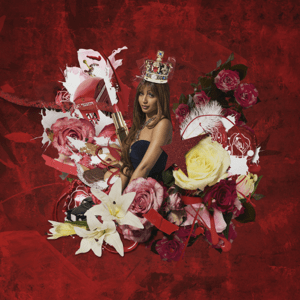
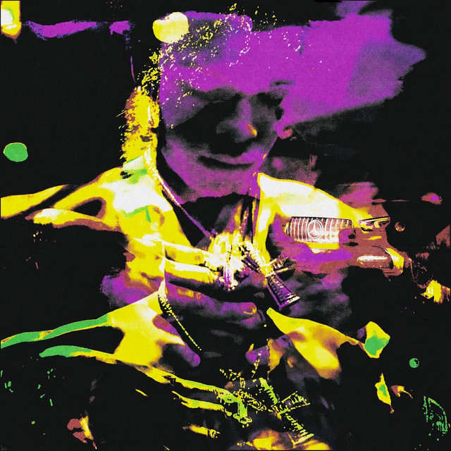
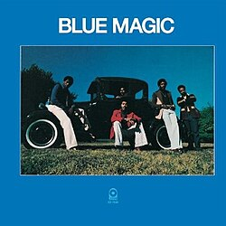

Album Duration: 21 Minutes
Currently Playing:
Song: Stateside

Her style of upbeat pop melodies laced with these UK house ass notes combined with her voice and flow over these beats, you won't even remember you were cooking lol.
Album Duration: 17 Minutes
Currently Playing:
Song: Spiral

These instrumentals he raps on can't be from this planet, especially with the way he floats over them all. He doesn't try to be something he isn't he just raps about living life, having fun and women. Always good vibes from him. So heres a 17 minute album for a 15 minute dish.
Album Duration: 43 Minutes
Currently Playing:
Song: Sideshow

This 1974 classic is going to make you want to do the side step and swing around as if you were about to start levitating. Soulful, vibrant, full of emotion and will be a tender loving hand to your ears, that you'll forget to turn it off after the food is done.